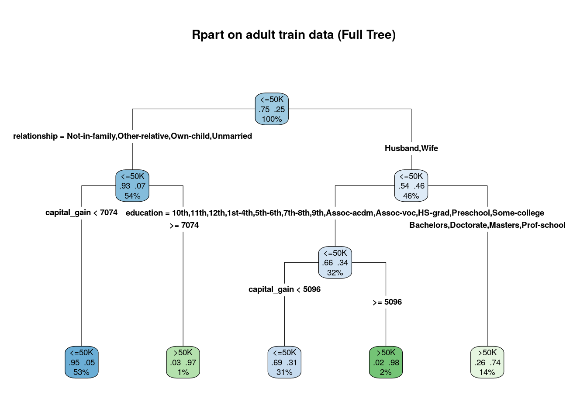

setwd(".")
set.seed(1122)
options("digits"=3)
library(caret)
library(dplyr)
library(psych)
library(rpart)
library(rpart.plot)
library(randomForest)
library(ROCR)adultTrain.df <- read.csv("adult-train.csv",sep=",",header=T,stringsAsFactors = T)
adultTest.df <- read.csv("adult-test.csv",sep=",",header=T,stringsAsFactors = T)
head(adultTest.df,6)## age workclass fnlwgt education education_num marital_status occupation relationship race sex
## 1 25 Private 226802 11th 7 Never-married Machine-op-inspct Own-child Black Male
## 2 38 Private 89814 HS-grad 9 Married-civ-spouse Farming-fishing Husband White Male
## 3 28 Local-gov 336951 Assoc-acdm 12 Married-civ-spouse Protective-serv Husband White Male
## 4 44 Private 160323 Some-college 10 Married-civ-spouse Machine-op-inspct Husband Black Male
## 5 18 ? 103497 Some-college 10 Never-married ? Own-child White Female
## 6 34 Private 198693 10th 6 Never-married Other-service Not-in-family White Male
## capital_gain capital_loss hours_per_week native_country income
## 1 0 0 40 United-States <=50K
## 2 0 0 50 United-States <=50K
## 3 0 0 40 United-States >50K
## 4 7688 0 40 United-States >50K
## 5 0 0 30 United-States <=50K
## 6 0 0 30 United-States <=50Kidx=c()
for (field in adultTrain.df) { idx <- c(idx,which(field == "?"))}
adultTrain.df <- adultTrain.df[-c(idx),]
idx=c()
for (field in adultTest.df) { idx <- c(idx,which(field == "?"))}
adultTest.df <- adultTest.df[-c(idx),]
rm(field)
rm(idx)model <- rpart(income ~ ., method="class", data=adultTrain.df)summary(model)## Call:
## rpart(formula = income ~ ., data = adultTrain.df, method = "class")
## n= 30161
##
## CP nsplit rel error xerror xstd
## 1 0.1300 0 1.000 1.000 0.01000
## 2 0.0642 2 0.740 0.740 0.00897
## 3 0.0373 3 0.676 0.676 0.00865
## 4 0.0100 4 0.639 0.639 0.00846
##
## Variable importance
## relationship marital_status capital_gain education education_num sex occupation
## 24 23 10 9 9 8 7
## age hours_per_week
## 5 3
##
## Node number 1: 30161 observations, complexity param=0.13
## predicted class=<=50K expected loss=0.249 P(node) =1
## class counts: 22653 7508
## probabilities: 0.751 0.249
## left son=2 (16292 obs) right son=3 (13869 obs)
## Primary splits:
## relationship splits as RLLLLR, improve=2280, (0 missing)
## marital_status splits as LRRLLLL, improve=2240, (0 missing)
## capital_gain < 5120 to the left, improve=1540, (0 missing)
## education splits as LLLLLLLLLRRLRLRL, improve=1190, (0 missing)
## education_num < 12.5 to the left, improve=1190, (0 missing)
## Surrogate splits:
## marital_status splits as LRRLLLL, agree=0.993, adj=0.984, (0 split)
## sex splits as LR, agree=0.691, adj=0.328, (0 split)
## age < 33.5 to the left, agree=0.645, adj=0.229, (0 split)
## occupation splits as -LLRRRLLLLRRLLR, agree=0.620, adj=0.175, (0 split)
## hours_per_week < 43.5 to the left, agree=0.604, adj=0.138, (0 split)
##
## Node number 2: 16292 observations, complexity param=0.0373
## predicted class=<=50K expected loss=0.0697 P(node) =0.54
## class counts: 15157 1135
## probabilities: 0.930 0.070
## left son=4 (15992 obs) right son=5 (300 obs)
## Primary splits:
## capital_gain < 7070 to the left, improve=492, (0 missing)
## education splits as LLLLLLLLLLRLRLRL, improve=143, (0 missing)
## education_num < 13.5 to the left, improve=143, (0 missing)
## occupation splits as -LLLRLLLLLRRLLL, improve=117, (0 missing)
## hours_per_week < 42.5 to the left, improve=108, (0 missing)
##
## Node number 3: 13869 observations, complexity param=0.13
## predicted class=<=50K expected loss=0.46 P(node) =0.46
## class counts: 7496 6373
## probabilities: 0.540 0.460
## left son=6 (9719 obs) right son=7 (4150 obs)
## Primary splits:
## education splits as LLLLLLLLLRRLRLRL, improve=900, (0 missing)
## education_num < 12.5 to the left, improve=900, (0 missing)
## occupation splits as -LRLRLLLLLRRRRL, improve=841, (0 missing)
## capital_gain < 5100 to the left, improve=699, (0 missing)
## capital_loss < 1780 to the left, improve=241, (0 missing)
## Surrogate splits:
## education_num < 12.5 to the left, agree=1.000, adj=1.000, (0 split)
## occupation splits as -LLLRLLLLLRLLLL, agree=0.792, adj=0.306, (0 split)
## capital_gain < 7490 to the left, agree=0.717, adj=0.054, (0 split)
## native_country splits as -LLRLLLLLRRLLLLRLLRRLLLRLLLLLRLLLLRRLLLLL, agree=0.709, adj=0.027, (0 split)
## capital_loss < 1890 to the left, agree=0.706, adj=0.018, (0 split)
##
## Node number 4: 15992 observations
## predicted class=<=50K expected loss=0.0528 P(node) =0.53
## class counts: 15147 845
## probabilities: 0.947 0.053
##
## Node number 5: 300 observations
## predicted class=>50K expected loss=0.0333 P(node) =0.00995
## class counts: 10 290
## probabilities: 0.033 0.967
##
## Node number 6: 9719 observations, complexity param=0.0642
## predicted class=<=50K expected loss=0.342 P(node) =0.322
## class counts: 6397 3322
## probabilities: 0.658 0.342
## left son=12 (9219 obs) right son=13 (500 obs)
## Primary splits:
## capital_gain < 5100 to the left, improve=432, (0 missing)
## occupation splits as -RLLRLLLLLRRRRL, improve=231, (0 missing)
## education splits as LLLLLLLRR--R-L-R, improve=164, (0 missing)
## education_num < 8.5 to the left, improve=164, (0 missing)
## age < 35.5 to the left, improve=131, (0 missing)
##
## Node number 7: 4150 observations
## predicted class=>50K expected loss=0.265 P(node) =0.138
## class counts: 1099 3051
## probabilities: 0.265 0.735
##
## Node number 12: 9219 observations
## predicted class=<=50K expected loss=0.307 P(node) =0.306
## class counts: 6388 2831
## probabilities: 0.693 0.307
##
## Node number 13: 500 observations
## predicted class=>50K expected loss=0.018 P(node) =0.0166
## class counts: 9 491
## probabilities: 0.018 0.982rpart.plot(model, extra=104, fallen.leaves = T, type=4, main="Rpart on adult train data (Full Tree)")
pred <- predict(model, adultTest.df, type="class")
confusionMatrix(pred, as.factor(adultTest.df$income))## Confusion Matrix and Statistics
##
## Reference
## Prediction <=50K >50K
## <=50K 10772 1837
## >50K 588 1863
##
## Accuracy : 0.839
## 95% CI : (0.833, 0.845)
## No Information Rate : 0.754
## P-Value [Acc > NIR] : <2e-16
##
## Kappa : 0.51
##
## Mcnemar's Test P-Value : <2e-16
##
## Sensitivity : 0.948
## Specificity : 0.504
## Pos Pred Value : 0.854
## Neg Pred Value : 0.760
## Prevalence : 0.754
## Detection Rate : 0.715
## Detection Prevalence : 0.837
## Balanced Accuracy : 0.726
##
## 'Positive' Class : <=50K
## pred.rocr <- predict(model, newdata=adultTest.df, type="prob")[,2]
f.pred <- prediction(pred.rocr, adultTest.df$income)
f.perf <- performance(f.pred, "tpr", "fpr")
auc <- performance(f.pred, measure = "auc")
plot(f.perf, colorize=T, lwd=3,main=paste("AUC of ROC is ", round(auc@y.values[[1]], 4)))
abline(0,1)options("digits"=5)
printcp(model)##
## Classification tree:
## rpart(formula = income ~ ., data = adultTrain.df, method = "class")
##
## Variables actually used in tree construction:
## [1] capital_gain education relationship
##
## Root node error: 7508/30161 = 0.249
##
## n= 30161
##
## CP nsplit rel error xerror xstd
## 1 0.1300 0 1.000 1.000 0.01000
## 2 0.0642 2 0.740 0.740 0.00897
## 3 0.0373 3 0.676 0.676 0.00865
## 4 0.0100 4 0.639 0.639 0.00846table (adultTrain.df$income)##
## <=50K >50K
## 22653 7508newTrainingDataset <- adultTrain.df[-sample(which(adultTrain.df$income =="<=50K"),22653-7508),]
table(newTrainingDataset$income)##
## <=50K >50K
## 7508 7508balanceModel <- rpart(income ~ ., method="class", data=newTrainingDataset)balPred <- predict(balanceModel, adultTest.df, type="class")
confusionMatrix(balPred, as.factor(adultTest.df$income))## Confusion Matrix and Statistics
##
## Reference
## Prediction <=50K >50K
## <=50K 8826 633
## >50K 2534 3067
##
## Accuracy : 0.79
## 95% CI : (0.783, 0.796)
## No Information Rate : 0.754
## P-Value [Acc > NIR] : <2e-16
##
## Kappa : 0.516
##
## Mcnemar's Test P-Value : <2e-16
##
## Sensitivity : 0.777
## Specificity : 0.829
## Pos Pred Value : 0.933
## Neg Pred Value : 0.548
## Prevalence : 0.754
## Detection Rate : 0.586
## Detection Prevalence : 0.628
## Balanced Accuracy : 0.803
##
## 'Positive' Class : <=50K
## balpred.rocr <- predict(balanceModel, newdata=adultTest.df, type="prob")[,2]
f.balpred <- prediction(balpred.rocr, adultTest.df$income)
f.balperf <- performance(f.balpred, "tpr", "fpr")
balauc <- performance(f.balpred, measure = "auc")
plot(f.balperf, colorize=T, lwd=3,main=paste("AUC of ROC is ", round(balauc@y.values[[1]], 4)))
abline(0,1)#2.2 Random Forest ## (a) Create a RF model using the entire training dataset.
set.seed(1122)
model <- randomForest(income ~ ., data=adultTrain.df,importance=T)pred <- predict(model, adultTest.df, type="class")
confusionMatrix(pred, as.factor(adultTest.df$income))## Confusion Matrix and Statistics
##
## Reference
## Prediction <=50K >50K
## <=50K 10563 1340
## >50K 797 2360
##
## Accuracy : 0.858
## 95% CI : (0.852, 0.864)
## No Information Rate : 0.754
## P-Value [Acc > NIR] : <2e-16
##
## Kappa : 0.597
##
## Mcnemar's Test P-Value : <2e-16
##
## Sensitivity : 0.930
## Specificity : 0.638
## Pos Pred Value : 0.887
## Neg Pred Value : 0.748
## Prevalence : 0.754
## Detection Rate : 0.701
## Detection Prevalence : 0.790
## Balanced Accuracy : 0.784
##
## 'Positive' Class : <=50K
## table(adultTest.df$income)##
## <=50K >50K
## 11360 3700varImpPlot(model)print(model)##
## Call:
## randomForest(formula = income ~ ., data = adultTrain.df, importance = T)
## Type of random forest: classification
## Number of trees: 500
## No. of variables tried at each split: 3
##
## OOB estimate of error rate: 13.78%
## Confusion matrix:
## <=50K >50K class.error
## <=50K 21096 1557 0.068733
## >50K 2599 4909 0.346164mtry <- tuneRF(adultTrain.df[,-ncol(adultTrain.df)], adultTrain.df$income, ntreeTry=500, stepFactor=1.5,improve=0.01, trace=TRUE, plot=TRUE)## mtry = 3 OOB error = 13.86%
## Searching left ...
## mtry = 2 OOB error = 13.71%
## 0.011005 0.01
## Searching right ...
## mtry = 4 OOB error = 14.14%
## -0.03193 0.01print(mtry)## mtry OOBError
## 2.OOB 2 0.13706
## 3.OOB 3 0.13859
## 4.OOB 4 0.14144###(i) The default value of mtry is 4 because that is the we have 15 fields which can be binary split 4 times.
optmodel <- randomForest(income ~ ., data=adultTrain.df,importance=T,mtry=2)
optpred <-predict(optmodel, adultTest.df, type="class")
confusionMatrix(optpred, as.factor(adultTest.df$income))## Confusion Matrix and Statistics
##
## Reference
## Prediction <=50K >50K
## <=50K 10617 1358
## >50K 743 2342
##
## Accuracy : 0.86
## 95% CI : (0.855, 0.866)
## No Information Rate : 0.754
## P-Value [Acc > NIR] : <2e-16
##
## Kappa : 0.601
##
## Mcnemar's Test P-Value : <2e-16
##
## Sensitivity : 0.935
## Specificity : 0.633
## Pos Pred Value : 0.887
## Neg Pred Value : 0.759
## Prevalence : 0.754
## Detection Rate : 0.705
## Detection Prevalence : 0.795
## Balanced Accuracy : 0.784
##
## 'Positive' Class : <=50K
## varImpPlot(optmodel)### (iv) Although the balance accuracy of the model was maintained, the overall accuracy was improved slightly (0.2%). The sensitivity was reduced and counterbalanced by an equal increase in the specificity of the model.
set.seed(1122)
library(arules)
library(arulesViz)
setwd(".")
rm(list=ls())trans <- read.transactions("groceries.csv", sep=",")
summary(trans)## transactions as itemMatrix in sparse format with
## 9835 rows (elements/itemsets/transactions) and
## 169 columns (items) and a density of 0.026091
##
## most frequent items:
## whole milk other vegetables rolls/buns soda yogurt (Other)
## 2513 1903 1809 1715 1372 34055
##
## element (itemset/transaction) length distribution:
## sizes
## 1 2 3 4 5 6 7 8 9 10 11 12 13 14 15 16 17 18 19 20 21 22 23
## 2159 1643 1299 1005 855 645 545 438 350 246 182 117 78 77 55 46 29 14 14 9 11 4 6
## 24 26 27 28 29 32
## 1 1 1 1 3 1
##
## Min. 1st Qu. Median Mean 3rd Qu. Max.
## 1.00 2.00 3.00 4.41 6.00 32.00
##
## includes extended item information - examples:
## labels
## 1 abrasive cleaner
## 2 artif. sweetener
## 3 baby cosmeticsf_is <-apriori(trans, parameter = list(support=0.1))## Apriori
##
## Parameter specification:
## confidence minval smax arem aval originalSupport maxtime support minlen maxlen target ext
## 0.8 0.1 1 none FALSE TRUE 5 0.1 1 10 rules FALSE
##
## Algorithmic control:
## filter tree heap memopt load sort verbose
## 0.1 TRUE TRUE FALSE TRUE 2 TRUE
##
## Absolute minimum support count: 983
##
## set item appearances ...[0 item(s)] done [0.00s].
## set transactions ...[169 item(s), 9835 transaction(s)] done [0.01s].
## sorting and recoding items ... [8 item(s)] done [0.00s].
## creating transaction tree ... done [0.00s].
## checking subsets of size 1 2 done [0.00s].
## writing ... [0 rule(s)] done [0.00s].
## creating S4 object ... done [0.00s].summary(f_is)## set of 0 rulesrm(f_is)inspect(sort(f_is, decreasing = T, by=“count”))
f_is <-apriori(trans, parameter = list(support=0.001))## Apriori
##
## Parameter specification:
## confidence minval smax arem aval originalSupport maxtime support minlen maxlen target ext
## 0.8 0.1 1 none FALSE TRUE 5 0.001 1 10 rules FALSE
##
## Algorithmic control:
## filter tree heap memopt load sort verbose
## 0.1 TRUE TRUE FALSE TRUE 2 TRUE
##
## Absolute minimum support count: 9
##
## set item appearances ...[0 item(s)] done [0.00s].
## set transactions ...[169 item(s), 9835 transaction(s)] done [0.01s].
## sorting and recoding items ... [157 item(s)] done [0.00s].
## creating transaction tree ... done [0.00s].
## checking subsets of size 1 2 3 4 5 6 done [0.02s].
## writing ... [410 rule(s)] done [0.00s].
## creating S4 object ... done [0.00s].summary(f_is)## set of 410 rules
##
## rule length distribution (lhs + rhs):sizes
## 3 4 5 6
## 29 229 140 12
##
## Min. 1st Qu. Median Mean 3rd Qu. Max.
## 3.00 4.00 4.00 4.33 5.00 6.00
##
## summary of quality measures:
## support confidence lift count
## Min. :0.00102 Min. :0.800 Min. : 3.13 Min. :10.0
## 1st Qu.:0.00102 1st Qu.:0.833 1st Qu.: 3.31 1st Qu.:10.0
## Median :0.00122 Median :0.846 Median : 3.59 Median :12.0
## Mean :0.00125 Mean :0.866 Mean : 3.95 Mean :12.3
## 3rd Qu.:0.00132 3rd Qu.:0.909 3rd Qu.: 4.34 3rd Qu.:13.0
## Max. :0.00315 Max. :1.000 Max. :11.24 Max. :31.0
##
## mining info:
## data ntransactions support confidence
## trans 9835 0.001 0.8summary(trans)## transactions as itemMatrix in sparse format with
## 9835 rows (elements/itemsets/transactions) and
## 169 columns (items) and a density of 0.026091
##
## most frequent items:
## whole milk other vegetables rolls/buns soda yogurt (Other)
## 2513 1903 1809 1715 1372 34055
##
## element (itemset/transaction) length distribution:
## sizes
## 1 2 3 4 5 6 7 8 9 10 11 12 13 14 15 16 17 18 19 20 21 22 23
## 2159 1643 1299 1005 855 645 545 438 350 246 182 117 78 77 55 46 29 14 14 9 11 4 6
## 24 26 27 28 29 32
## 1 1 1 1 3 1
##
## Min. 1st Qu. Median Mean 3rd Qu. Max.
## 1.00 2.00 3.00 4.41 6.00 32.00
##
## includes extended item information - examples:
## labels
## 1 abrasive cleaner
## 2 artif. sweetener
## 3 baby cosmeticssort(table(unlist(LIST(trans))))[1:1]## baby food
## 1inspect(sort(f_is, by='support', decreasing = T)[1:5])## lhs rhs support confidence lift count
## [1] {citrus fruit,root vegetables,tropical fruit,whole milk} => {other vegetables} 0.0031520 0.88571 4.5775 31
## [2] {curd,domestic eggs,other vegetables} => {whole milk} 0.0028470 0.82353 3.2230 28
## [3] {curd,hamburger meat} => {whole milk} 0.0025419 0.80645 3.1562 25
## [4] {herbs,rolls/buns} => {whole milk} 0.0024403 0.80000 3.1309 24
## [5] {herbs,tropical fruit} => {whole milk} 0.0023386 0.82143 3.2148 23inspect(sort(f_is, by='confidence', decreasing = T)[1:5])## lhs rhs support confidence lift count
## [1] {rice,sugar} => {whole milk} 0.0012201 1 3.9136 12
## [2] {canned fish,hygiene articles} => {whole milk} 0.0011185 1 3.9136 11
## [3] {butter,rice,root vegetables} => {whole milk} 0.0010168 1 3.9136 10
## [4] {flour,root vegetables,whipped/sour cream} => {whole milk} 0.0017285 1 3.9136 17
## [5] {butter,domestic eggs,soft cheese} => {whole milk} 0.0010168 1 3.9136 10inspect(sort(f_is, by='support', decreasing = F)[1:5])## lhs rhs support confidence lift count
## [1] {cereals,curd} => {whole milk} 0.0010168 0.90909 3.5579 10
## [2] {butter,jam} => {whole milk} 0.0010168 0.83333 3.2614 10
## [3] {pastry,sweet spreads} => {whole milk} 0.0010168 0.90909 3.5579 10
## [4] {butter,rice,root vegetables} => {whole milk} 0.0010168 1.00000 3.9136 10
## [5] {other vegetables,rice,tropical fruit} => {whole milk} 0.0010168 0.83333 3.2614 10inspect(sort(f_is, by='confidence', decreasing = F)[1:5])## lhs rhs support confidence lift count
## [1] {curd,turkey} => {other vegetables} 0.0012201 0.8 4.1345 12
## [2] {fruit/vegetable juice,herbs} => {other vegetables} 0.0012201 0.8 4.1345 12
## [3] {herbs,rolls/buns} => {whole milk} 0.0024403 0.8 3.1309 24
## [4] {onions,waffles} => {other vegetables} 0.0012201 0.8 4.1345 12
## [5] {root vegetables,tropical fruit,turkey} => {other vegetables} 0.0012201 0.8 4.1345 12